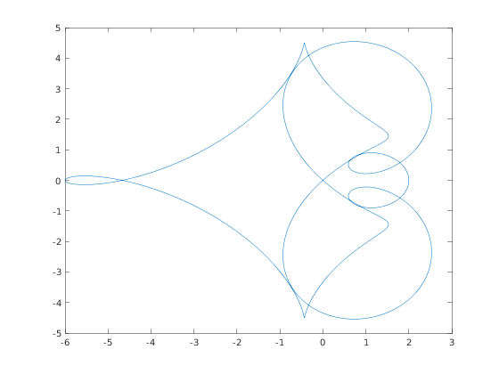

Boundary of the continuous spectrum
The continuous spectrum of a $\mathcal{QT}$ matrix $A$ is given by the image of the unit circle through $a(z)$, the symbol, and the part of the complex plane that have winding number different from zero.
Contents
Syntax
R = range(A) returns a sampling of points obtained by evaluating the symbol of $A$ at points on the unit circle.
Example
E = [ zeros(3, 7) , diag([ 8, -8, 8 ]) ]; A = cqt([0 1 -2 1], [0 1 1 0 -1 0 0 1], E); plot(range(A));